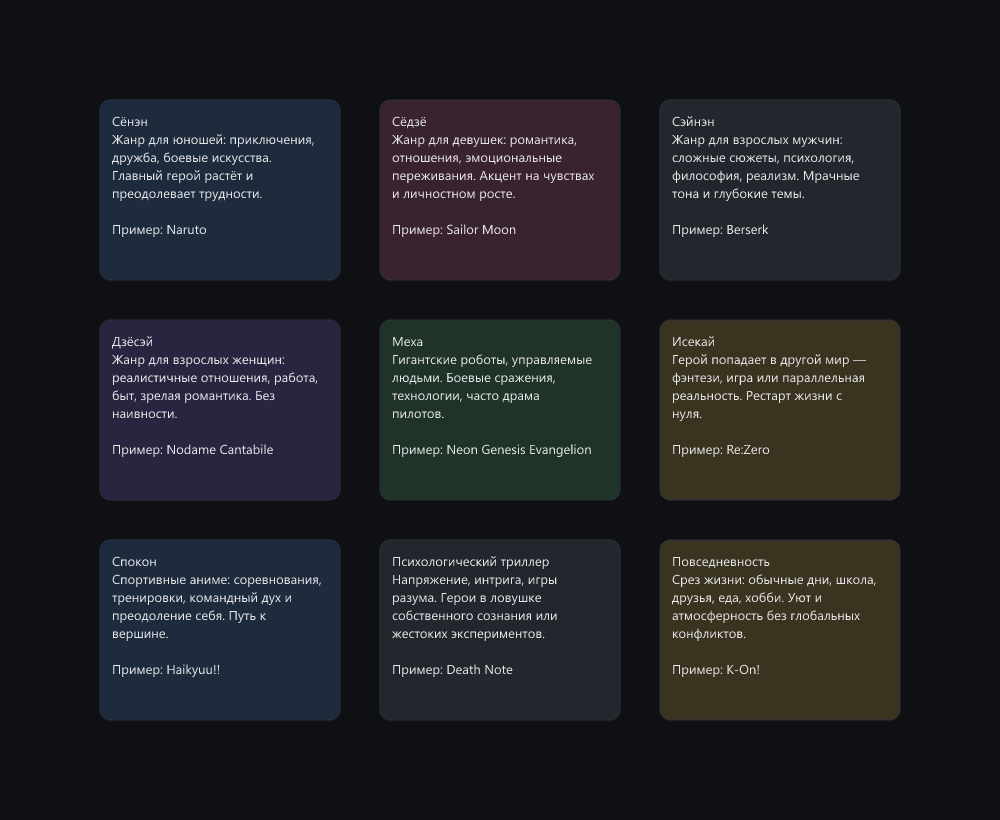
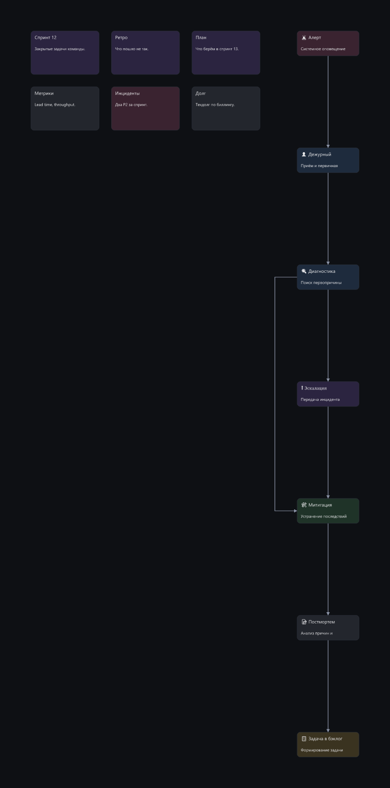
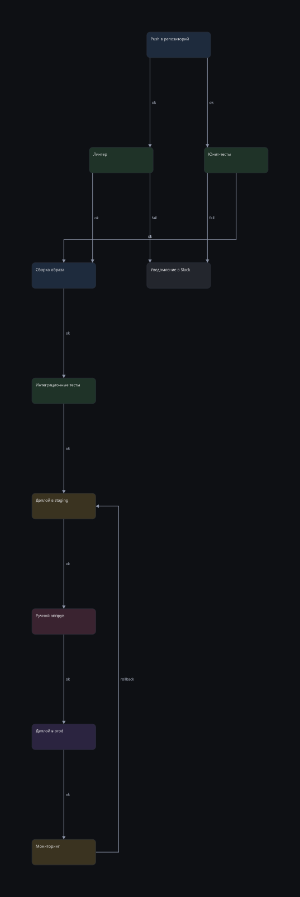
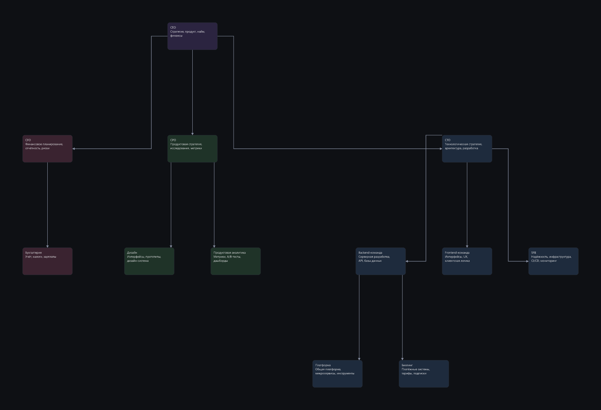
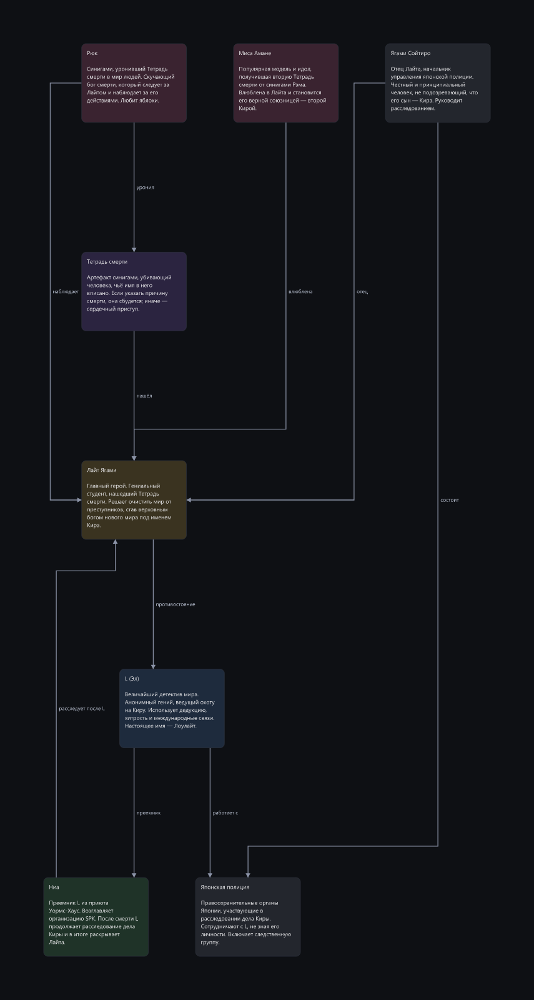
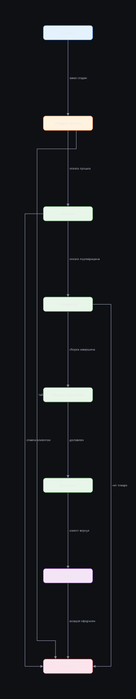
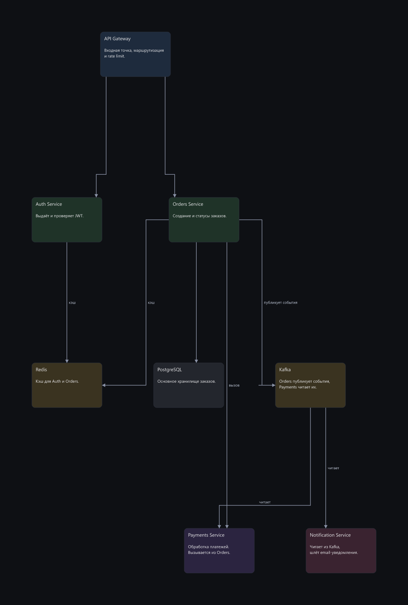

Сравнение прогонов E02 → E03
Модель deepseek-v4-flash, пул из 8 задач. Клик по картинке — открыть в полном размере.
65 → 69средний score
2/8 → 5/8без жёстких конфликтов
39 → 31пересечений стрелок
cards-set без изменений
не граф: набор карточек, сетка и воздух
E02 100/100
отлично · ok
4 итераций · 0 пересечений · отказов 0 · пропорция 1.29

E03 100/100
отлично · ok
8 итераций · 0 пересечений · отказов 0 · пропорция 1.29

next-to-occupied +1
новая композиция рядом с занятой зоной, без наложений
E02 96/100
отлично · ok
9 итераций · 0 пересечений · отказов 0 · пропорция 0.45

E03 97/100
отлично · ok
8 итераций · 0 пересечений · отказов 0 · пропорция 0.45

pipeline-cicd +26
линейный конвейер с ветвлением, направление слева направо
E02 50/100
терпимо
20 итераций · 6 пересечений · отказов 0 · пропорция 0.28

E03 76/100
хорошо · ok
9 итераций · 2 пересечений · отказов 0 · пропорция 0.29

tree-org +13
иерархия, ветви должны держаться у своих корней
E02 61/100
терпимо
8 итераций · 2 пересечений · отказов 0 · пропорция 1.52

E03 74/100
хорошо
40 итераций · 2 пересечений · отказов 0 · пропорция 2.47

wiki-anime -3
вики по документу, чистый лист, 8-10 узлов, дерево связей
E02 74/100
хорошо
17 итераций · 2 пересечений · отказов 0 · пропорция 0.49

E03 71/100
хорошо · ok
13 итераций · 2 пересечений · отказов 0 · пропорция 0.67

states-order +8
граф с циклами и обратными связями
E02 60/100
терпимо
50 итераций · 3 пересечений · отказов 7 · пропорция 0.08

E03 68/100
терпимо · ok
10 итераций · 3 пересечений · отказов 0 · пропорция 0.3

extend-existing -19
дополнение готового графа новыми узлами без ломки старого
E02 58/100
терпимо
15 итераций · 2 пересечений · отказов 0 · пропорция 0.64

E03 39/100
плохо
50 итераций · 7 пересечений · отказов 3 · пропорция 3.36

dense-arch +8
стресс: 14 узлов, плотный граф, несколько подсистем
E02 19/100
плохо
15 итераций · 24 пересечений · отказов 0 · пропорция 3.02

E03 27/100
плохо
11 итераций · 15 пересечений · отказов 0 · пропорция 1.08